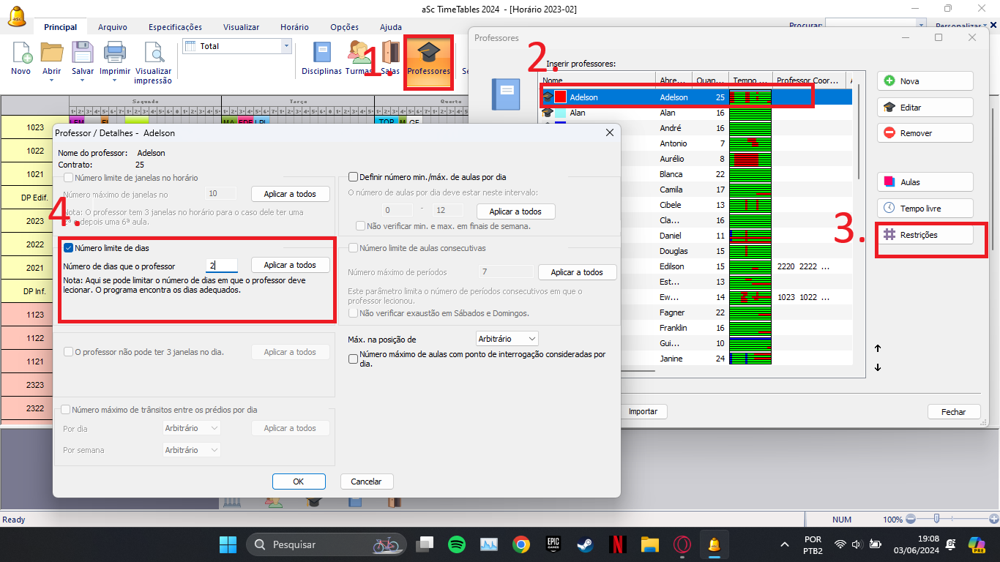

Detalhes do post:
Restrição de Aulas por Semana para Docentes:
Descrição:Alguns docentes solicitam que as suas aulas sejam alocadas em no máximo 2 dias na semana

SOLUÇÃO:
1- Acessar a aba de Professores no aSc Timetables;
2- Escolher o docente que deseja concentrar as aulas;
3- Entrar no menu de restrições individuais do professor;
4- Ir em “número limite de dias” e marcar a caixa de seleção, inserir na caixa de texto o número de dias que o professor pode lecionar, após isso salvar a restrição clicando em “ok” na parte de baixo.
obs: Essa solução não concentra as aulas em dias seguidos, nem em dias específicos, apenas define um número máximo de dias com aulas na semana.